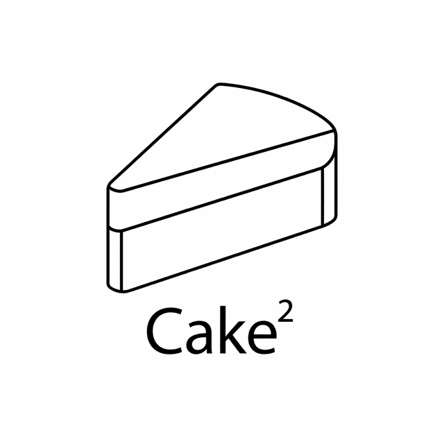
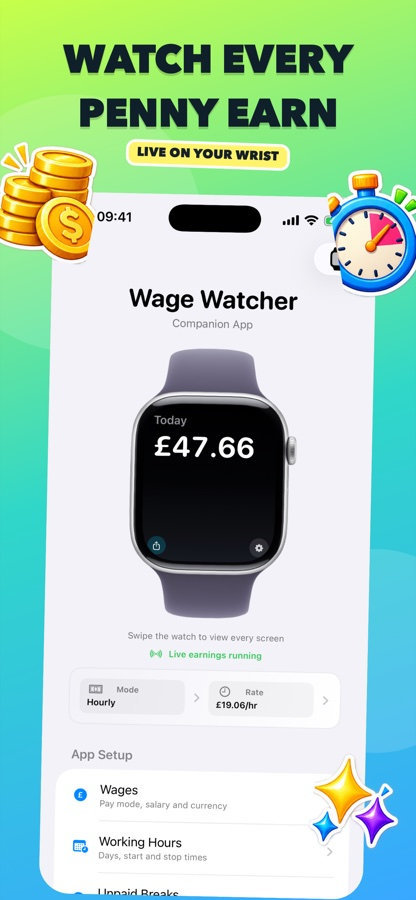
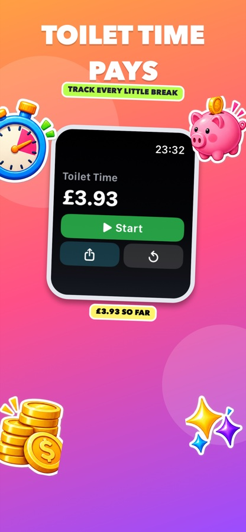
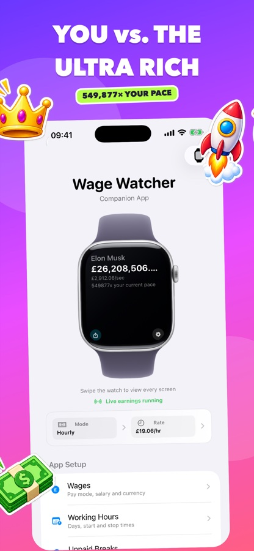
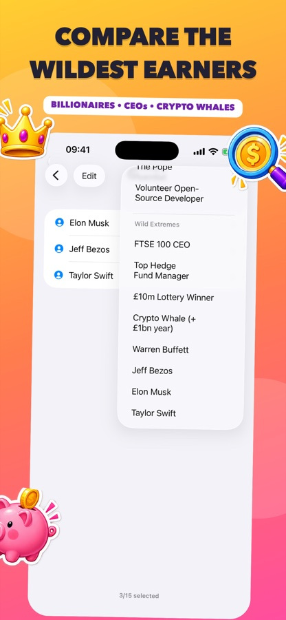
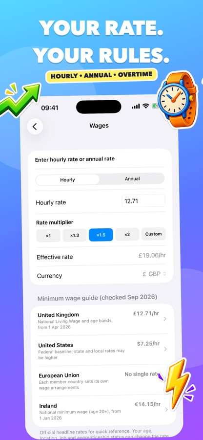

Track live earnings on Apple Watch
Watch today, this week and this month update while you work, without reaching for your phone.

Cake SquaredSee your estimated pay grow live on your wrist with an Apple Watch earnings tracker. Set your working pattern on iPhone, compare earnings and see what your time earns.
Watch today, this week and this month update while you work, without reaching for your phone.
Use hourly pay or annual salary, choose your currency, add rate multipliers and account for unpaid breaks.
Swipe through carefully labelled estimates for professions, public figures and ultra-rich earners.
Turn the screen on your watch into a colourful shareable snapshot on iPhone.
Swipe through a few of the ways WageWatcher makes earnings visible, personal and a little more fun.





Pro unlocks the playful extras: put live earnings on your watch face, track Toilet Time, add your own influential comparison and switch to the exclusive gold app icon.
Choose a monthly subscription or one-off lifetime purchase in the app. Prices are shown by Apple before purchase.
Follow the illustrated setup guide to install the companion app and connect your Apple Watch.
Email support@cakesquared.co.uk for help or bug reports.
Last updated: September 2026
Your wage settings stay on your devices. WageWatcher does not collect personal data, and purchases are handled by Apple.